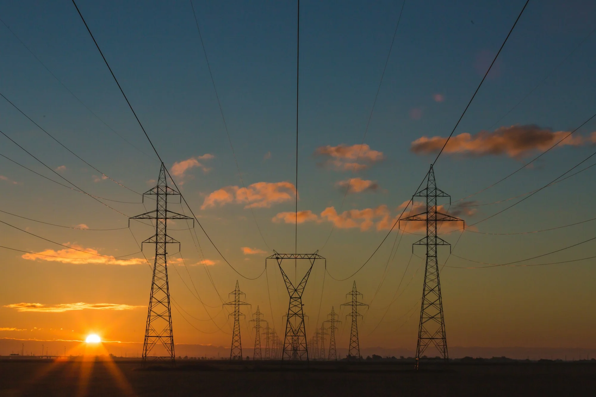

Understand the scope.
Review requirements, project context, site constraints, and technical interfaces.
Specialist electrical engineering across six core disciplines: Transmission, Distribution, Commercial & Industrial consumers, Public Sector infrastructure, Statutory Approvals, and Contract Consultancy.

We execute complex high-voltage transmission electrical systems, including Extra High Tension (EHT) substations. Our approach connects technical requirements, civil-electrical interfaces, and rigorous site execution.

Power & distribution transformers and Ring Main Units (RMUs) form the backbone of reliable distribution networks. We execute transformer installations, compact package substations, and complete HT/LT distribution systems with careful attention to site conditions, protection, and civil coordination.

Commercial, industrial, and high-demand consumer electrification brings engineering into active workspaces. We coordinate electrical installations around the requirements of the facility and its operations.

Public-sector infrastructure demands precision across critical and logistically demanding sites. Our experience encompasses dam electrification, power transmission and distribution networks including Lakshadweep Administration projects, Milma total electrification, large-scale underground cable laying, and Southern Railways infrastructure.

External electrification works depend on timely statutory clearances and accurate technical documentation. We manage end-to-end scheme approval submissions, load sanctioning, electrical inspectorate coordination, and official sanction orders so utility connections move forward without delay.

Backed by over 25 years of multi-sector field execution, we provide electrical engineering and general contract consultancy—supporting clients with technical feasibility, load estimation, BOQ and tender preparation, vendor evaluation, and end-to-end contract supervision.
A coordinated approach, shaped around the scope and requirements of each project.
Review requirements, project context, site constraints, and technical interfaces.
Coordinate engineering inputs, civil dependencies, execution sequence, and site readiness.
Manage electrical installation with disciplined attention to technical and safety requirements.
Coordinate project checks, relevant records, and handover within the agreed scope.
Our expertise spans high-voltage and low-voltage electrical systems, EHT substations, RMU installations, commercial internal electrification, and public-sector or utility infrastructure.
Civil-electrical coordination is part of our approach. The exact responsibilities, interfaces, and deliverables are agreed for each project.
Share the project location, type of infrastructure, electrical scope, available drawings, current stage, and indicative timeline. These help us understand your requirements.
The current portfolio is a clearly labelled presentation preview with illustrative project types and reference photographs. Client-approved project information will replace these placeholders.
Tell us what you’re building. Let’s work through the electrical scope together.